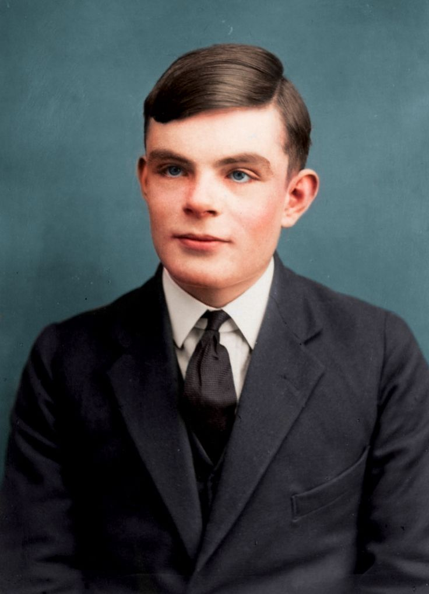

Sumber- Alan Turing (1912–1954) adalah seorang matematikawan, ahli logika, dan ilmuwan komputer asal Inggris yang dikenal sebagai salah satu pionir utama dalam bidang ilmu komputer dan kecerdasan buatan. Berikut adalah informasi penting tentang kehidupannya:
Lahir pada 23 Juni 1912 di Maida Vale, London, Inggris, dalam keluarga kelas menengah. Turing menunjukkan minat dalam matematika dan ilmu alam sejak usia muda. Ia belajar di Eton College, sekolah elit di Inggris, dan kemudian melanjutkan pendidikan di Universitas Cambridge, di mana ia meraih gelar dalam bidang matematika pada 1934. Turing melanjutkan studi pascasarjana di Universitas Princeton di Amerika Serikat, di mana ia mendapat gelar Ph.D. dalam logika matematis pada 1938.
Turing Machine: Pada 1936, Turing mengembangkan konsep mesin Turing, sebuah model matematika yang menjadi dasar untuk ilmu komputer teoritis. Mesin ini menggambarkan bagaimana komputer dapat menyelesaikan masalah dengan cara menjalankan algoritma secara berurutan. Konsep ini sangat penting dalam pengembangan teori komputasi modern dan menginspirasi pembuatan komputer digital pertama.
Turing Test: Turing juga mengemukakan Turing Test pada 1950, sebuah uji untuk menilai kemampuan mesin dalam meniru perilaku manusia. Turing berpendapat bahwa jika mesin dapat berinteraksi dengan manusia dan membuat manusia tidak bisa membedakan mesin dari manusia dalam percakapan, maka mesin tersebut dapat dianggap "berpikir".
Enigma Machine: Salah satu kontribusi terbesar Turing datang selama Perang Dunia II, di mana ia bekerja di Bletchley Park, pusat penyandian Inggris. Turing memimpin tim yang berhasil memecahkan kode Enigma yang digunakan oleh Jerman untuk mengirimkan pesan-pesan rahasia.
Pemecahan Kode Enigma: Dengan menggunakan mesin yang ia kembangkan, yang dikenal dengan Colossus, Turing dan timnya mampu memecahkan kode Enigma, yang berperan krusial dalam mengurangi durasi perang dan menyelamatkan ribuan nyawa. Keberhasilan ini sangat mengurangi waktu yang diperlukan untuk memecahkan pesan-pesan yang sangat kompleks yang digunakan oleh pasukan Jerman.
Enigma Machine: Salah satu kontribusi terbesar Turing datang selama Perang Dunia II, di mana ia bekerja di Bletchley Park, pusat penyandian Inggris. Turing memimpin tim yang berhasil memecahkan kode Enigma yang digunakan oleh Jerman untuk mengirimkan pesan-pesan rahasia.
Pemecahan Kode Enigma: Dengan menggunakan mesin yang ia kembangkan, yang dikenal dengan Colossus, Turing dan timnya mampu memecahkan kode Enigma, yang berperan krusial dalam mengurangi durasi perang dan menyelamatkan ribuan nyawa. Keberhasilan ini sangat mengurangi waktu yang diperlukan untuk memecahkan pesan-pesan yang sangat kompleks yang digunakan oleh pasukan Jerman.
Setelah perang, Turing bekerja di University of Manchester di mana ia mengembangkan komputer digital pertama yang dapat diprogram.
Turing juga tertarik pada penelitian kecerdasan buatan dan mengajukan berbagai teori tentang bagaimana mesin bisa berpikir atau menyelesaikan masalah seperti manusia.
Kehidupan Pribadi: Turing adalah seorang homoseksual, namun pada masa hidupnya, homoseksualitas dianggap ilegal di Inggris. Pada 1952, Turing ditangkap karena kekasihnya mengungkapkan hubungan mereka, yang mengarah pada proses hukum dan penangkapan.
Hukuman Kimiawi: Sebagai bagian dari hukum tersebut, Turing dipaksa untuk menjalani pengobatan kimiawi (kastrasi kimiawi) untuk "mengobati" kecenderungannya. Perlakuan ini menghancurkan hidupnya, dan ia mengalami depresi yang parah.
Pada 7 Juni 1954, Turing ditemukan meninggal dunia akibat keracunan sianida, dalam keadaan yang dianggap sebagai bunuh diri, meskipun beberapa orang masih meragukan penyebab kematiannya.
Pengampunan: Pada tahun 2009, Pemerintah Inggris mengeluarkan permintaan maaf resmi atas perlakuan yang diterima Turing selama hidupnya. Pada 2013, Ratu Elizabeth II memberikan pengampunan resmi atas hukuman yang diterima Turing.
Turing dianggap sebagai bapak ilmu komputer dan kecerdasan buatan. Penemuan-penemuannya membentuk dasar-dasar dari dunia komputer modern yang kita kenal hari ini.
Peringatan Turing Award: Dalam dunia ilmu komputer, Turing Award adalah penghargaan tertinggi yang diberikan setiap tahun untuk kontribusi luar biasa dalam bidang komputer dan teknologi.
Alan Turing Law: Pada 2017, sebuah undang-undang diberlakukan di Inggris yang memberikan pengampunan kepada individu yang dihukum karena homoseksualitas, yang dikenal sebagai Alan Turing Law.
Alan Turing adalah tokoh yang sangat berpengaruh dalam sejarah teknologi dan komputer, dan meskipun dia hidup dalam waktu yang penuh tantangan pribadi, warisannya tetap hidup melalui kemajuan ilmu komputer yang dibuat berkat pemikiran dan inovasinya.